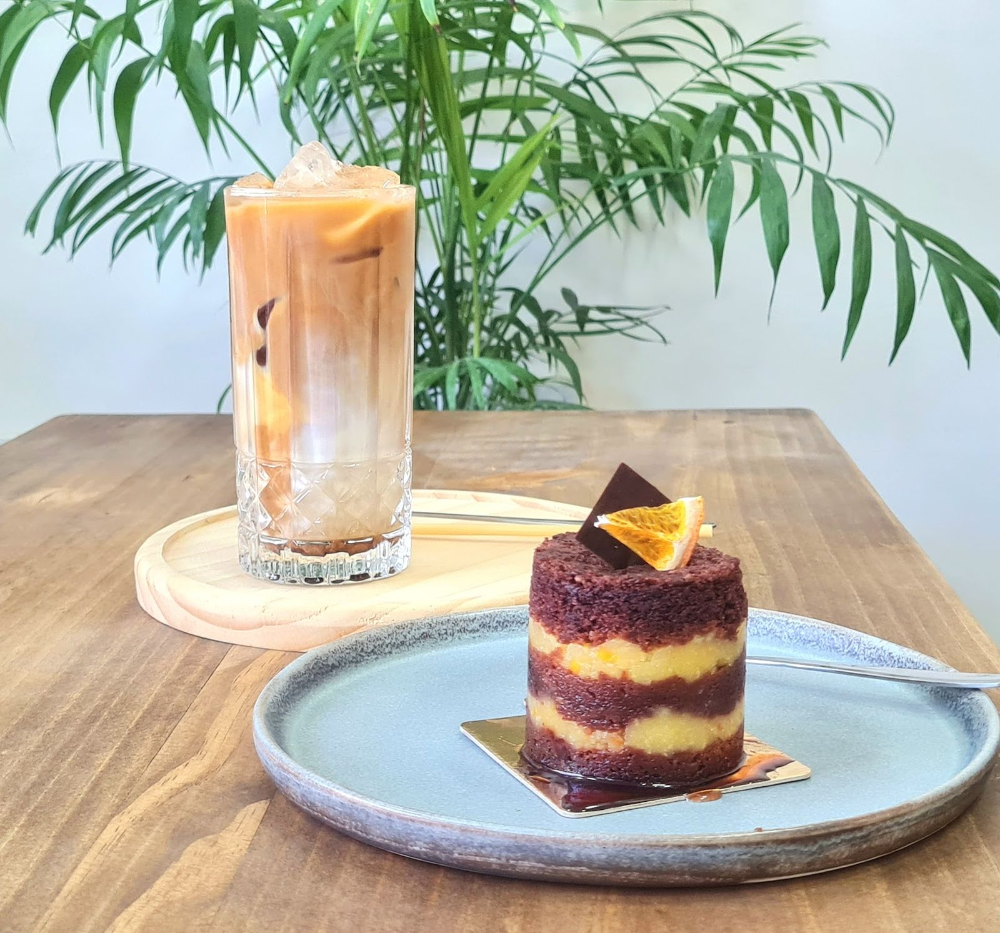
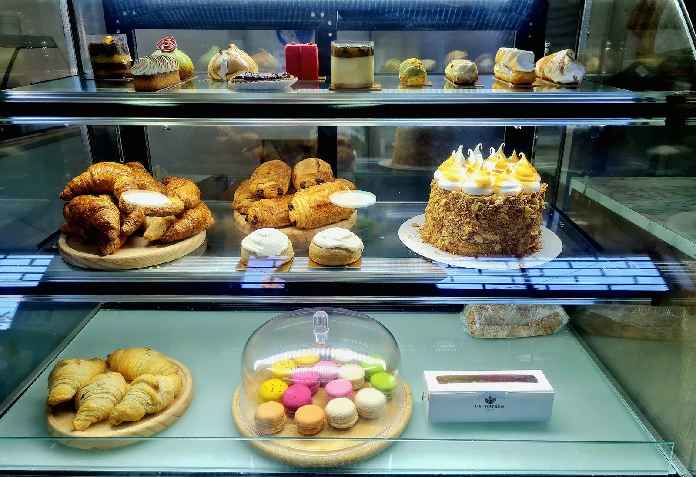
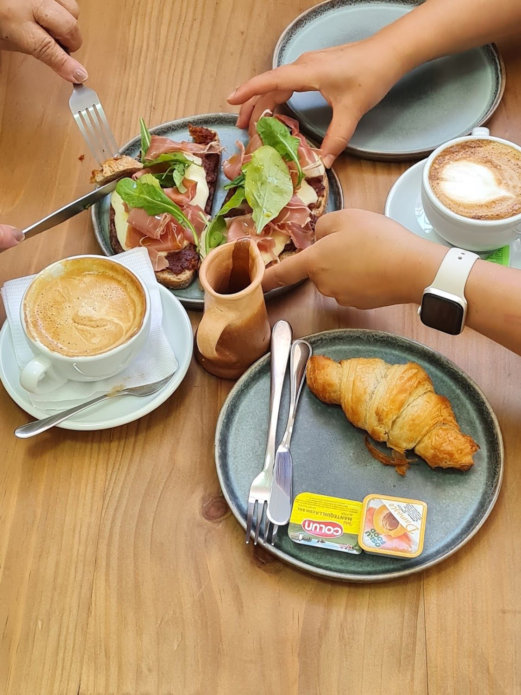
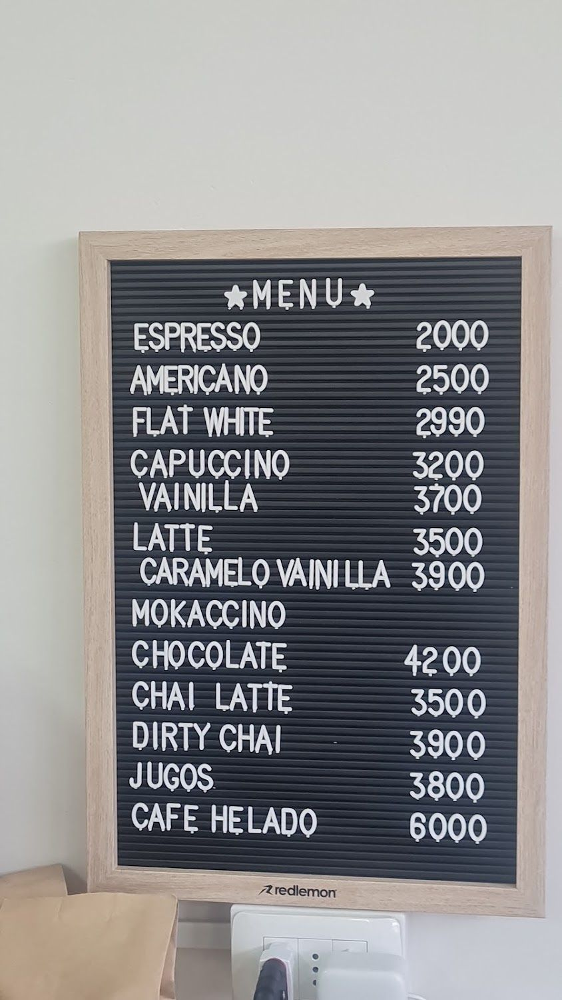

5,0 redondo
Veintitrés reseñas y ninguna bajo cinco estrellas. Es el único local de esta serie con el rating perfecto.
Leer las reseñas →Membrillar 50, local 2 · Rancagua
Y de esa madera rubia son sus mesas. Café de verdad, bollería, pastelería, helados artesanales y sándwiches gourmet, con todo preparado en el momento.
Lunes a viernes de 08:00 a 17:00

Veintitrés reseñas y ninguna bajo cinco estrellas. Es el único local de esta serie con el rating perfecto.
Leer las reseñas →Espresso $2.000, flat white $2.990, latte $3.500. Están en la pizarra del local y acá van tal cual.
Ver la pizarra →“Es fácil llegar en auto sin problemas, sin pago y cómodo para tomar un buen desayuno”, dice un Local Guide.
Cómo llegar →Nosotros
Es la frase que usa un Local Guide que ha ido a cafeterías de Santiago, Rancagua y el sur.

“Un latte de caramelo delicioso. En la vitrina tienen lleno de cositas ricas, me encantó.” Arantxa Araya, Local Guide con 24 reseñas
Croissants, hojaldres, macarons y tortas por porción. Google saca “postres” y “macarrones” como los dos temas que más se repiten en sus reseñas.

El único link de su Instagram no es una carta ni un delivery: es una playlist de Spotify que se llama “Café del Hayedo PM”. Y en las reseñas alguien anota, sin que nadie le pregunte, “muy limpio, buena música”.
Lo demás encaja: mesas de madera de haya, loza azul porcelana, plantas, y espacio amplio — “de fácil acceso” en silla de ruedas, según el mismo Local Guide.
Escuchar su playlist →Todas las fotos son del propio local, de su ficha de Google Maps.
Carta
Los precios de las bebidas están transcritos de la foto de su propia pizarra, publicada en su ficha de Google.
El mokaccino aparece en su pizarra sin precio asignado: acá se deja igual, sin inventarlo. “Chocolate” es el chocolate caliente, uno de los temas que Google extrae de sus reseñas.
Precios de bebidas transcritos de la foto de su pizarra publicada en su ficha de Google.
Reseñas
Las 23 son de cinco estrellas. Copiadas tal cual de su ficha.
★★★★★
Es una excelente cafetería que se diferencia bastante de las demás, tienen productos muy buenos y demasiado deliciosos, además sus ingredientes son de bastante calidad, el café es buenísimo, e ido a varias cafeterías tanto de Santiago, rancagua y el sur y está esta es buenísima por sobre muchas igual todo es preparado en el momento con ingredientes frescos. La recomiendo totalmente a todos.
★★★★★
Rico café, atención agradable y muy amable. La comida estaba deliciosa, puré natural 10/10. Muy recomendado
★★★★★
Un latte de caramelo delicioso 🙂↔️ en la vitrina tienen lleno de cositas ricas, me encantó
“Es fácil llegar en auto sin problemas, sin pago y cómodo para tomar un buen desayuno”
“Totalmente, el espacio es cómodo, muy limpio buena música, muy recomendable para ir con la familia”
“Es de fácil acceso y de espacio amplio, muy cómoda”
“Tiene todas las opciones y pronto irán añadiendo más”
Los cuatro recuadros son campos que un Local Guide llenó en su reseña de Google.
Redes
Sólo lo verificado. Ningún perfil inventado.
Es su único canal de contacto: no publican teléfono.

Su ficha todavía figura sin reclamar.
Es el único link de su bio de Instagram. Y una reseña lo confirma: “muy limpio, buena música”.
Visítanos
Membrillar 50, local 2
Rancagua, Región de O'Higgins
Plus Code R7H8+FC · con estacionamiento gratuito
Lunes a viernes de 08:00 a 17:00
Según su ficha de Google, consultada el 15-09-2026. Es un café de días de semana: cierra a las cinco y no abre el fin de semana.
Servicios declarados en su ficha de Google. La entrega a domicilio la declaran ellos, pero no dicen por dónde se pide.